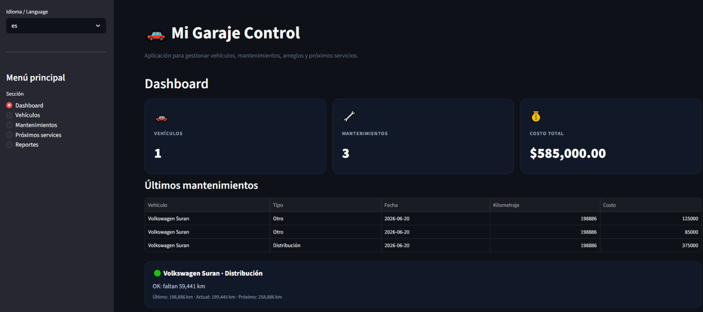
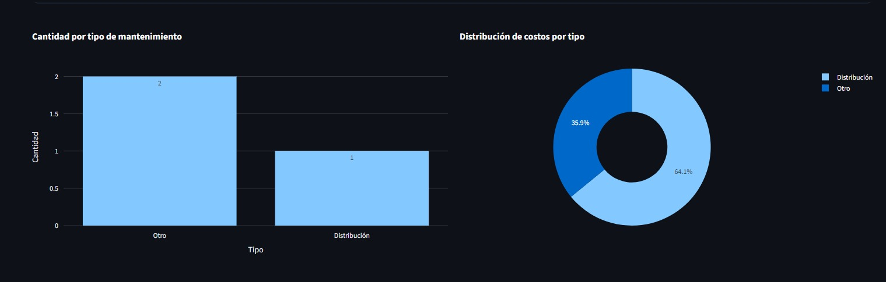

Garage Control
Aplicación web orientada al control integral de vehículos personales. Permite registrar autos y motos, cargar mantenimientos, reparaciones, mejoras, costos asociados y estimar próximos services según el historial y kilometraje actual.
Resumen
¿Qué problema resuelve?
Permite centralizar en un solo lugar el historial completo de cada vehículo, reemplazando anotaciones dispersas por un registro organizado de mantenimientos, reparaciones, mejoras, costos y próximos services estimados.
Funcionalidades principales
- Registro y gestión de vehículos.
- Diferenciación entre autos y motos.
- Historial completo de mantenimientos, reparaciones y mejoras.
- Registro y seguimiento de costos asociados.
- Dashboard con métricas y gráficos interactivos.
- Estimación automática de próximos services por kilometraje.
- Alertas visuales según estado del mantenimiento.
- Filtros por vehículo y estado de service.
- Soporte bilingüe Español / Inglés.
Enfoque técnico
El proyecto trabaja con datos persistentes para construir un historial consultable por vehículo. La lógica diferencia mantenimientos preventivos, reparaciones y mejoras, permitiendo analizar costos, consultar antecedentes y estimar próximos services a partir del kilometraje registrado.
Captura
Vista del proyecto
Captura de la interfaz principal de la aplicación de mantenimiento.



Dashboard, alertas y reportes
La aplicación permite visualizar el estado general de los vehículos, consultar próximos services y analizar reportes de gastos y mantenimientos registrados.
Valor técnico
Qué demuestra este proyecto
Este proyecto muestra capacidad para modelar información cotidiana, organizarla y transformarla en una herramienta de consulta práctica.
Habilidades aplicadas
- Diseño de entidades relacionadas.
- Persistencia de datos locales.
- Registro y consulta de información histórica.
- Separación de datos por tipo de vehículo.
- Construcción de una solución útil para control personal.
Aprendizajes
Este proyecto me permitió practicar cómo convertir una necesidad personal en una aplicación concreta, trabajando con registros, relaciones de datos y funcionalidades orientadas al uso diario.
Mejoras futuras
Roadmap
Posibles mejoras para escalar la aplicación y hacerla más completa.
Próximas funcionalidades
- Clasificación de registros entre mantenimiento, reparación y mejora.
- Edición y eliminación de registros del historial.
- Filtros avanzados por fecha, tipo, categoría y rango de kilometraje.
- Selección de color identificatorio por vehículo.
- Exportación de reportes en PDF o Excel.
- Backup y restauración de la base de datos.
Objetivo del proyecto
Transformarlo en una plataforma integral de gestión vehicular, capaz de registrar el historial completo de autos y motos, analizar gastos, documentar reparaciones realizadas y estimar automáticamente próximos services mediante reglas de kilometraje.